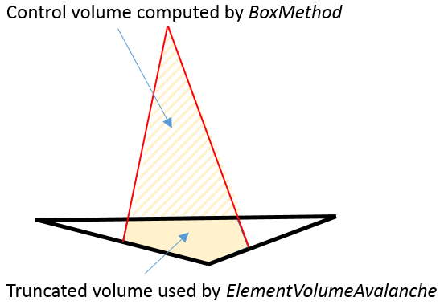
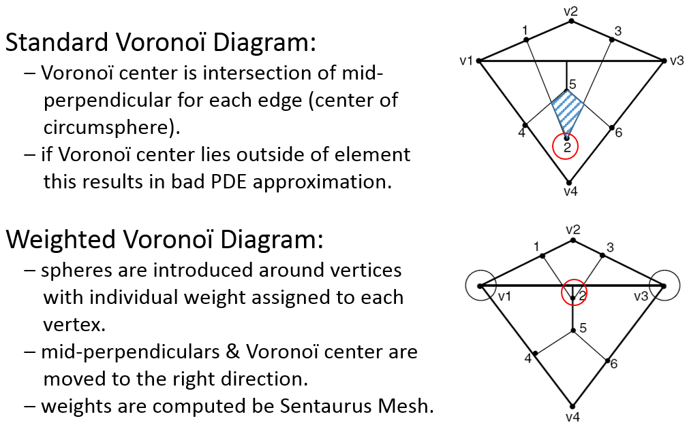

Sentaurus Device
9. Three-Dimensional Device Simulation
9.1 Overview
9.2 Meshing Controls
9.3 Numeric Controls
9.4 Linear Solvers
9.5 Parallelization
9.6 Understanding the Log File
Objectives
- To describe how to run 3D device simulations and make them more efficient.
9.1 Overview
In addition to 2D simulation capabilities, Sentaurus Device is designed to simulate the device thermoelectrical behavior for native 3D devices as well as device geometries with 3D cylindrical symmetry.
Typically, 3D device simulations are more computationally expensive than 2D ones, which require special solutions to be applied to make them running more efficiently.
Some of these solutions are:
- Mesh optimization to allow for accurate 3D spatial discretization as well as robust box method discretization of the partial differential equations.
- Use of numeric parameter sets, dedicated to 3D device simulations.
- Possibility to apply thread parallelism to accelerate simulations on shared-memory computers.
- Linear equation system solvers, suitable for 3D device simulation.
- Strategy for debugging the output from the box method.
The corresponding example, where most of the solutions described in this section are applied, can be found in the Applications_Library/GettingStarted/sdevice/3Ddiode_demo directory.
9.2 Meshing Controls
Mesh generation, which produces grids suitable for 3D device simulations, might be not an easy task. See Section 2. Axis-Aligned Mesh Refinement for descriptions of different aspects of mesh generation using Sentaurus Mesh.
This section summarizes some recommendations for those who are starting with 3D mesh generation:
- For complex device geometries, apply the mixed meshing strategy by combining an axis-aligned mesh with boundary-conforming mesh refinement (see Section 3.3 Offsetting for how to do this in Sentaurus Mesh).
- For device geometries with built-in periodicity, use Cuts to control the mesh
symmetry for the periodic parts of the structure:
AxisAligned { yCuts=(1.03, 3.09, 5.15, 7.21, 9.27) } - Specify dedicated parameters in the Delaunizer section to control the number of 3D mesh nodes, the node connectivity, and the overall mesh quality (see Figure 1).
{kind=link}
Figure 1. Suggested Delaunizer settings for 3D mesh generation. (Click image for full-size view.)
The high-level Sentaurus Structure Editor command to produce the corresponding Delaunizer section is shown here:
(sdesnmesh:delaunizer "maxPoints" 1e6 "maxConnectivity" 120 "delaunayTolerance" 0. "minDihedralAngleAllowed" 1 )
9.3 Numeric Controls
Numeric controls can be split into different groups:
- General controls are used to control the solution methods and provide some debugging information. Options allow you to switch on or off certain computations, such as element quantity averaging, filtering out "poor" elements in the case of the avalanche term computation, and simulation statistics controls.
- Nonlinear solver controls.
- Linear solver controls.
- Parallel computation controls.
The first two controls are discussed here. The last two controls are discussed in Section 9.4 Linear Solvers and Section 9.5 Parallelization.
The full list of controls is demonstrated in the sdevice_des.cmd file from the Applications_Library/GettingStarted/sdevice/3Ddiode_demo project.
9.3.1 General Controls
Math {
Transient = BE
eMobilityAveraging = ElementEdge
hMobilityAveraging = ElementEdge
ElementVolumeAvalanche
AvalFlatElementExclusion = 1.
ParallelToInterfaceInBoundaryLayer(FullLayer -ExternalBoundary)
ComputeGradQuasiFermiAtContacts= UseQuasiFermi
WeightedVoronoiBox
AutoCNPMinStepFactor = 0
AutoNPMinStepFactor = 0
-PlotLoadable
SimStats
ExitOnFailure
...
}
The general controls are:
- Transient= BE
Switches on the backward Euler transient solution method, which is usually ~2 times faster than the default composite trapezoidal rule/backward differentiation formula (TRBDF). It is recommended if a simulation runs in Transient mode. - e|hMobilityAveraging= ElementEdge
Initiates mobility value-averaging for each semiconductor element edge, which results in a smaller discretization error than averaging on the entire element. - ElementVolumeAvalanche
Instructs the simulator to use a truncated element volume for the avalanche term computation instead of the one computed by the box method (see Figure 2). This ensures the computation of the avalanche term is not overestimated for flat elements.

Figure 2. If ElementVolumeAvalanche is switched on, the avalanche computation uses the truncated volume (filled as solid), instead of the volume originally computed by the box method.
- AvalFlatElementExclusion= <value>
Filters out flat elements of the avalanche term computation. This might be useful for the off-state breakdown computations. Elements with a flatness coefficient less than the specified value should be filtered out.
Use this keyword with caution because, for large angle values, some "good" elements could be filtered, which can lead to a breakdown voltage overestimation. The typically suggested value should not exceed 1° or 2°.
- ParallelToInterfaceInBoundaryLayer(FullLayer -ExternalBoundary)
Requests that a driving-force field component parallel to the interface is used in the high-field saturation and avalanche models for all elements that touch an interface, but excludes elements that are in contact with the external boundary. This keyword can be useful to avoid nonphysical breakdowns along an interface with a coarse mesh. - ComputeGradQuasiFermiAtContacts= UseQuasiFermi
By default, for mesh elements touching electrodes, the electric field replaces the gradient of the quasi-Fermi potential for the computations of the high-field saturation model.
Evaluation of the electric field can be numerically problematic in situations when the current densities are small. In such situations, it is suggested to use the gradient of the quasi-Fermi potential at electrodes as a driving force. - WeightedVoronoiBox
Switches on the use of the weighted Voronoï diagram in the box method computations (see Figure 3). It works in conjunction with storeDelaunayWeight=true in Sentaurus Mesh (see Section 9.2 Meshing Controls).
Figure 3. Two-dimensional non-Delaunay mesh: (top) not weighted Voronoï diagram shows the overlap of the elements and (bottom) weighted Voronoï diagram has no elements overlapping. (Click image for full-size view.)
- AutoCNPMinStepFactor= 0, AutoNPMinStepFactor= 0
In the case of nonconvergence, Sentaurus Device automatically activates the CNormPrint and NewtonPlot commands (see Section 6.7 Debugging Newton Solver–Related Convergence Issues) if the following criteria are met:
– For CNormPrint: step size < AutoCNPMinStepFactor * MinStep
– For NewtonPlot: step size < AutoNPMinStepFactor * MinStep
By default, this will print out additional information on the last successful Newton iteration and also will generate a *_des_min.tdr file for further debugging. In three dimensions, such files can consume a lot of disk space. To switch off the generation of such files, zero values are recommended. - -PlotLoadable
By default, when a plot is produced, Sentaurus Device includes additional datasets in the TDR file, which are required by the Load command to restart a simulation. In the case of 3D simulations, plotting these datasets might require significant disk space. Use this option to avoid plotting these extra datasets. - SimStats
Use this option to write various simulation statistics (such as CPU time and memory consumption) into a .plt file for further visualization. - ExitOnFailure
Instructs Sentaurus Device to interrupt a simulation if any of the Solve section commands fail.
{kind=link}
9.3.2 Nonlinear Solver Controls
Math {
...
Digits = 5
ErrRef(electron) = 1e8
ErrRef(hole) = 1e8
Iterations = 10
NotDamped = 100
RHSMin = 1e-8
EquilibriumSolution(Iterations=100)
Extrapolate
RefDens_eGradQuasiFermi_ElectricField_HFS = 1e8
RefDens_hGradQuasiFermi_ElectricField_HFS = 1e8
}
For more details about the nonlinear system Newton solver, see Section 6. Nonlinear System Newton Solver. The most important controls we recommend to touch in case of 3D device simulation are discussed here.
- Digits, ErrRef(electron), ErrRef(hole)
These keywords control the convergence of transport model equations by looking at the relative solution update \(Δx \) on each Newton or Gummel iteration:
\[ {|Δx|} / {|x|+x_{\text"ref"}} < 10^{-\text"Digits"} \]
Here, \(x\) represents the corresponding solution variable (such as potential, electron density, hole density etc.) and \(x_{\text"ref"}\) indicates the reference quantity value, provided as the ErrRef statement for each solution variable in the command file. For a smaller \(x_{\text"ref"}\) and a higher Digits, the more accurate computations for a given solution variable will be required.
Specifying Digits=5 should be sufficient for most cases. For wide-bandgap device simulations, smaller values for carrier densities ErrRef controls should be used due to much smaller intrinsic carrier densities in those materials.
- Iterations, NotDamped, RHSMin
While solving the transport model equations self-consistently, Sentaurus Device uses the Newton-like solution method, where solutions are updated on each iteration as shown in Figure 1 of Section 6.1 Solving Nonlinear Equation System With Newton Solver.
When you run Quasistationary or Transient tasks with the Newton method, such as Coupled {Poisson Electron Hole}, the Newton solver convergence is verified by looking at two computed quantities:
- Global error criterion: \(\text"error"\; = 1/ε_R 1/N ∑↙{e,i}{|z(e,i,j)-z(e,i,j-1)|} / {|z(e,i,j)|+z_{\text"ref"}(e)} < 1\)
- Right-hand side (RHS) norm criterion: \(\text"RHS"\; = ||A ⋅ x - b|| <\) RHSmin
The Newton solver quits the iterations if either criterion is met. Here, \(z\) indicates the corresponding solution variable, \(e\) refers to the equation, \(i\) denotes the node number, \(j\) corresponds to the iteration, and \(N\) corresponds to the total number of unknowns (number of nodes multiplied by the number of solution variables). The relative error \(ε_R\) corresponds to 10-Digits. The reference error parameter \(z_{\text"ref"}(e)\) can be set through ErrRef(<equation>).
If the number of iterations exceeds the value of Iterations, then the Newton solver quits, and the simulator cuts the step size and repeats the simulation with a smaller step (see Section 6.3 Optimizing the Nonlinear Solver Performance).
By default, 20 Newton iterations are allowed. For large 3D tasks, a smaller number of iterations is recommended, because each Newton iteration might take a significant amount of CPU time. The Newton method typically has quadratic convergence behavior. Therefore, specifying 10–12 iterations, in most cases, should be sufficient to reach the converged solution.If more iterations are required for a specific task, such as solving the initial guess, then the number of iterations can be explicitly specified as a Coupled command option:
Coupled (iterations=100) { Poisson }There are two solution damping methods available for the Newton solver: LineSearchDamping and Bank–Rose damping. The former can be useful when it is difficult to find a solution for a certain task, for example, computing the initial guess (see Section 6.2 Achieving a Good Initial Guess). For most cases, Bank–Rose damping is not recommended. To avoid it, use the higher value for NotDamped (1000 by default) than for Iterations.
- EquilibriumSolution(Iterations=100)
Having an electrode crossing a p-n junction or a heterointerface can lead to an incorrect solution along such a contact due to the charge neutrality condition imposed at Ohmic electrodes. To avoid this, the EqOhmic option can be specified for an electrode, which instructs the simulator not to impose the charge neutrality condition. This option is useful for both 2D and 3D device simulations, but can only be applied to isothermal device simulations.
If the EqOhmic option is activated on the electrode:
Electrode { { Name="source" Voltage= 0.0 EqOhmic} }Sentaurus Device implicitly solves the Poisson equation at the very beginning to produce the equilibrium state solution. This usually requires a much larger number of iterations than specified by Iterations. To ensure there are enough iterations allowed to solve the equilibrium state condition, specify the EquilibriumSolution command with the dedicated options (such as Iterations, LineSearchDamping, and Digits) relevant to this command only.
- Extrapolate
The initial guess for the next computed step could be obtained by linear extrapolation from solutions computed in previous steps, which can drastically speed up convergence (see Section 6.4 Using the Extrapolate Option for details). - RefDens_e|hGradQuasiFermi_ElectricField_HFS
If the gradient of the quasi-Fermi level rapidly changes but the density does not, then convergence can be unstable within regions of small densities. This can be circumvented by introducing a correction density \(n_{0}\) in the equation for the quasi-Fermi potential (see Section 6.6.1 High-Field Saturation and Avalanche Generation for details).
The nonzero \(n_{0}\) value stabilizes convergence within regions with small densities but large \(∇Φ\) values. In this case, the special smoothing procedure is applied between e|hGradQuasiFermi and ElectricField fields for the high-field saturation model, which uses gradQuasiFermi as a default driving force. See Section 11.10 Driving Force for Avalanche Generation and High-Field Saturation Models for details about different model driving forces and their smoothing controls.
For relatively large reference densities, with values greater than ni(T), you might expect a breakdown voltage shift due to the difference between the actual gradQuasiFermi and the electric-field driving-force values, which enter the avalanche generation term computation. To avoid this, apply driving force smoothing to the high-field velocity saturation model only, which is activated using the RefDens_e|hGradQuasiFermi_ElectricField_HFS command options.
9.4 Linear Solvers
Different linear solvers are available in Sentaurus Device:
- Section 9.4.1 Blocked Decomposition Solver
- Section 9.4.2 SUPER Linear Solver
- Section 9.4.3 PARDISO Linear Solver
- Section 9.4.4 ILS Linear Solver
The keyword Method specifies which solver Sentaurus Device will use. By default, the SUPER linear solver is used. Table 1 summarizes different aspects of each linear solver.
| Solver | Type | Thread parallelism | Extended precision support | Recommended for | Speciality |
|---|---|---|---|---|---|
| Blocked | Not a real solver, but a strategy to solve complex matrices in mixed mode | no | – | Circuit and mixed-mode device simulations | Mixed-mode circuit and device simulations |
| SUPER | Direct, sparse matrices | no | yes | Medium 2D tasks, wide-bandgap devices | Robust, very accurate, typically slowest over all |
| PARDISO | Direct, sparse matrices | yes | yes* | Large 2D devices, small- and medium-sized 3D silicon devices | ~2 times faster than SUPER, well parallelized |
| ILS | Iterative, sparse matrices | yes | yes | Large 2D and 3D tasks, wide-bandgap devices | Adjustable behavior, slight superlinear parallel scaling |
*Combining extended-precision arithmetic and parallelization degrades the performance of PARDISO because the BLAS3 fast matrix multiplication library (only available for the standard precision arithmetic) is not applied in this case.
9.4.1 Blocked Decomposition Solver
Math {
Method= Blocked
SubMethod= ILS(set=1)
ACMethod= Blocked
ACSubMethod= ILS(set=2)
PrintLinearSolver
}
Use the Blocked solver (Method=Blocked) when single or multiple numerically simulated 2D or 3D devices are combined together within a circuit. This is called the mixed-mode device operation, which is described in Section 3. Mixed Mode.
The concept of block decomposition is illustrated in Figure 4. Here, two devices (Device 1 and Device 2) are simulated numerically and coupled via the circuit. The full matrix is decomposed into blocks, which include the sparse matrices of the numerically simulated devices ("1" and "2") coupled to the circuit matrix "c" using the "a" and "b" matrices. Each "1" and "2" matrix is solved using the solver specified by the SubMethod, while the circuit matrix "c" is solved by the internal direct solver.
{kind=link}
Figure 4. Schematics of the blocked decomposition solver. Linear systems for two numerically simulated devices are solved using the method specified by the SubMethod keyword. In the case of small-signal AC analysis, a different linear solver can be selected using the ACSubMethod command. (Click image for full-size view.)
Activate the option PrintLinearSolver in the Math section to print out additional information regarding the linear solvers in the log file.
9.4.2 SUPER Linear Solver
To specify the SUPER direct linear solver for single-device simulations, use:
Math {
Method= Super
}
To specify SUPER for mixed-mode device simulations, use:
Math {
Method= Blocked
SubMethod= Super
}
If no solver is specified in the Math section, then the SUPER solver will be used. The default solver settings for SUPER are optimized to address most standard simulation needs. Modifying the direct solver settings is not recommended.
For direct linear solvers, the approximate memory footprint M(N) increases with the number of nodes N between ~ c x N x log(N) (ideal case) and ~ c x N3/2 (realistic cases). Correspondingly, the number of arithmetic operations A(N) increases with the number of nodes N between ~ c x N3/2 (ideal case) and ~ c x N5/2 (realistic cases). The proportionality constant c reflects specific properties of the mesh structure and equations (that is, a linear system matrix portrait).
For 2D tasks, especially wide-bandgap device simulations, SUPER provides the best overall solution performance. It is generally not suitable for 3D device simulations because it lacks parallelization, and memory consumption drastically increases with the increased node count.
9.4.3 PARDISO Linear Solver
To specify the Parallel Direct Solver (PARDISO) for single-device simulations, use:
Math {
Method= ParDiSo[(options)]
}
To specify PARDISO for mixed-mode device simulations, use:
Math {
Method= Blocked
SubMethod= ParDiSo[(options)]
}
Unlike SUPER, PARDISO takes full advantage of shared-memory multiprocessor computers while being run on multiple CPUs in parallel. The default solver settings for PARDISO are optimized to address most standard simulation needs.
Several customizations are available for PARDISO (see Table 2).
| Option | Description | Default |
|---|---|---|
| NonsymmetricPermutation | Computes initial nonsymmetric matrix permutation and scaling, which places large matrix entries on the diagonal. | on |
| IterativeRefinement | Performs up to two iterative refinement steps to improve the accuracy of the solution. | off |
| MultipleRHS | Solves linear systems with multiple right-hand sides. This option applies to AC analysis only. | off |
| RecomputeNonsymmetricPermutation | Computes nonsymmetric matrix permutation and scaling before each factorization. | off |
Using -NonsymmetricPermutation results in better speed but less accuracy and is not recommended.
Switching on IterativeRefinement and RecomputeNonsymmetricPermutation targets better accuracy, but typically slows down the system solve.
Running in single-CPU mode, PARDISO outperforms SUPER with respect to runtime and memory requirements. Therefore, you can consider it for standard 2D simulation tasks. For tasks that require higher accuracy (for example, wide-bandgap device simulations), these customization options might be required, which make SUPER a more favorable choice.
Having almost superlinear parallel scaling capabilities, PARDISO is also well suited for medium-sized 3D device simulations. You might expect up to a ~12 times speedup factor with PARDISO while running 3D simulations in parallel on a machine, equipped with 16 or more CPUs.
9.4.4 ILS Linear Solver
To specify the Iterative Linear Solver (ILS) for single-device simulations, use:
Math {
Method= ILS[(set=<n>)]
[ILSrc= "set(<n>) {...};"]
}
To specify ILS for mixed-mode device simulations, use:
Math {
Method= Blocked
SubMethod= ILS[(set=<n>)]
[ILSrc= "set(<n>) {...};"]
}
Here, <n> indicates the set number, which is referred to in the subsequent ILSrc statement.
Compared to the direct method, the iterative approach reduces memory requirements for large simulation tasks dramatically. Therefore, ILS is the preferred solver for device simulations where the mesh node count exceeds the limit suitable for direct linear solvers.
ILS operation consist of the following steps:
- Compute nonsymmetric ordering to improve the matrix condition.
- Determine symmetric ordering to reduce fill-in in the preconditioner.
- Create a preconditioner to accelerate convergence.
- Call an iterative method.
Each step is controlled by different parameters, which are combined within groups.
Parameters that control the ILS behavior are grouped within a set. A set is assigned a number, which is referred to in the input. Set numbers 1–19 are reserved for the built-in defaults. User-defined sets can be assigned to numbers 20 and higher. Built-in parameter sets, which target different applications, are hard-coded and do not actually need an explicit set specification. To activate any of these sets, you need to specify the set number. For example:
Math {
Method= ILS(set=2)
}
Figure 5 illustrates examples of built-in sets, suggested for different purposes.
{kind=link}
Figure 5. Built-in ILS parameter sets and their parameter values. (Click image for full-size view.)
In addition, you can define custom sets using the ILSrc keyword. Table 3 refers to several ILS sets, which were established for different applications. To use these sets, they must be defined explicitly using the ILSrc command in the Math section.
| Application | ILSrc set |
|---|---|
| 3D device off-state breakdown | ILSrc= "set (24) { iterative (gmres(150), tolrel=1e-10, maxit=300); preconditioning(ilut(1e-5,-1),left); ordering(symmetric=nd, nonsymmetric=mpsilst); options(verbose=0, refineresidual=10, prep=1, pdeg=2); };" |
| SiC device simulations | ILSrc= "set (25) { iterative(gmres(100), tolrel=1e-10, tolunprec=1e-4, tolabs=0, maxit=200); preconditioning(ilut(1.5e-6,-1), left); ordering(symmetric=nd, nonsymmetric=mpsilst); options(compact=yes, linscale=0, refineresidual=10, verbose=0); };" |
| III–N device simulations | ILSrc= "set (26) { iterative(gmres(100), tolrel=1e-12, tolunprec=1e-8, tolabs=0, maxit=200); preconditioning(ilut(1e-8,-1),left); ordering ( symmetric=nd, nonsymmetric=mpsilst ); options( compact=yes, linscale=0, refineresidual=10, verbose=0); }; };" |
The most relevant parameters for adjusting ILS behavior are:
- Quality of preconditioning:
preconditioning(ilut(ε,-1), left);
Elements smaller than ε are removed during elimination. Smaller values of ε lead to denser triangular factors L and U of the preconditioner, which will increase the accuracy of the preconditioning step. Consequently, there is a cost and accuracy trade-off when selecting the ε value. - Number of GMRES backvectors:
iterative (gmres(150), tolrel=1e-10, maxit=300);
GMRES stores a given number of backvectors. If the solution does not converge within a given restart number, GMRES restarts the iteration. A higher number of backvectors improves convergence but increases memory use. - Stopping criteria for iterative solver:
iterative (gmres(150, tolrel=1e-10, maxit=300));
The iterative solver stops when the residual error becomes less than a given normalized value or if the maximum number of iterations is reached. - Extra options for matrix reordering and the ILUT preconditioner:
options(prep=1, pdeg=2);
Convergence can be further improved by forcing the fixed initial ordering and second-degree ILUT preconditioner. - Forcing additional iterations:
options(verbose=0, refineresidual=10);
Convergence can be further improved by forcing the iterative solver to have more iterations after the stopping criteria are fulfilled.
9.5 Parallelization
Math {
NumberOfThreads= <n>
ParallelLicense (Wait)
Wallclock
}
Sentaurus Device uses thread parallelism to accelerate simulations on shared-memory computers. Table 4 lists the parallelized components of Sentaurus Device.
| Task | Description |
|---|---|
| Box discretization | Computation of box method coefficients. |
| Matrix assembly | Computation of mobility, avalanche, current density, energy flux; assembly of Poisson, continuity, lattice, and temperature equations. |
| Linear system solve | PARDISO and ILS solvers contribute to thread parallelism. |
The value of the keyword NumberOfThreads declares the number of threads to be allocated and used for parallelization. It must not exceed the physical number of CPUs available on a machine or a cluster node where the simulation is run.
Do not use NumberOfThreads= maximum, which will allocate all CPUs on a machine. At least one CPU must remain free to allow the system task to be run. Otherwise, instead of a speedup, performance degradation will be observed.
The ParallelLicense (Wait) command instructs the simulator to wait until a parallel license becomes available.
To display wallclock times (the real time between process invocation and termination) rather than CPU times, use the Wallclock option.
One parallel license supports parallelization on four CPUs. Therefore, to run on 16 CPUs, for example, four parallel licenses are required.
To investigate different task contributions to the overall speedup, their parallelization can be independently enabled using the following commands:
Math {
NumberOfAssemblyThreads = <n>
NumberOfSolverThreads = <n>
}
To see how parallelization contributes to a simulation speedup, run a simulation in single-thread mode first, and then rerun it in parallel mode using a value higher than one assigned using NumberOfThreads. Then, feed both log files to the sdevicestat stand-alone routine, which will produce cumulative reports, showing the accumulated times spent for each particular task. For example:
> sdevicestat n123_des.log ... Total CPU-time : 118.04 s Rhs-time : 46.92 % ( 55.39 s ) Jacobian-time : 8.38 % ( 9.89 s ) Solve-time : 43.63 % ( 51.50 s )
Figure 6 explains the meaning of the speedup estimations shown in Figure 7, as follows:
- Wallclock Time: The real time a simulation took from invocation until termination
- Solver Speedup: The speedup due to the parallelization applied in the linear solver compared to a single CPU run (Solve-time in log file)
- Assembly Speedup: How much faster the matrix assembly is (Rhs-time and Jacobian-time in log file) due to multi-threading parallelization, compared to a single CPU run
{kind=link}
Figure 6. Explanation of fields shown in Figure 7. (Click image for full-size view.)
Figure 7 shows the comparison of 3D simulation results for a structure with ~1M mesh nodes, running in parallel on different numbers of CPUs using PARDISO and ILS.
{kind=link}
Figure 7. Comparison of the simulation speedup factors while running large 3D device simulations on different numbers of CPUs using PARDISO and ILS. (Click image for full-size view.)
To run Sentaurus Device in parallel mode inside Sentaurus Workbench, the automatic allocation feature is available, which allows you to automatically synchronize the number of requested parallel slots between a simulation job and a scheduler.
For more details about this Sentaurus Workbench feature, see Section 2.3 Running Projects.
9.6 Understanding the Log File
When starting your 3D simulation for the first time, it is useful to look in the log file to better understand the details of the mesh on which you run your device simulations.
All the commands you specified in the Math section of the command file should be reflected in the log file:
Model: Math Switched on Parameter: WeightedVoronoiBox = on Parameter: BM_ExtendedPrecision = on Parameter: AutoNPMinStepFactor = 0 Parameter: AutoCNPMinStepFactor = 0 Model: SimStats Switched on Parameter: ElementVolumeAvalanche = on Parameter: AvalFlatElementExclusion = 1 deg Parameter: ComputeGradQuasiFermiAtContacts = UseQuasiFermi Parameter: RefDens_eGradQuasiFermi_ElectricField = 100000000 cm^-3 Parameter: RefDens_hGradQuasiFermi_ElectricField = 100000000 cm^-3
At the beginning of the simulation, the BoxMethod analyzes the input grid and prints out detailed information about it:
NumberOfVertices = 10935
NumberOfElements = 50688
NumberOfTetrahedrons = 50688 (100.0 %)
NumberOfObtuseElements = 16896 (33.33 %)
NumberOfNonDelaunayElements = 0 ( 0.00 %)
The most important indication of the 3D mesh quality is how the generated mesh fulfills the Delaunay criterion. The most important criteria are the DeltaVolume, which indicates the difference between the real physical device volume and the volume computed by BoxMethod, and the number of non-Delaunay mesh elements, which are reported for each region inside the device independently. It is important to have as small as possible DeltaVolume values for semiconductor regions and as few as possible non-Delaunay elements.
{kind=link}
Figure 8. Sentaurus Device report on non-Delaunay mesh statistics. (Click image for full-size view.)
For more details, see Section 7. Sentaurus Device at Runtime.
Copyright © 2022 Synopsys, Inc. All rights reserved.